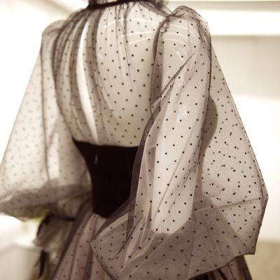

Istoria designului de modă se referă în mod specific la dezvoltarea scopului și intenției din spatele articolelor de îmbrăcăminte, pantofi și accesorii, precum și la designul și construcția acestora. Industria modernă, bazată în jurul firmelor sau caselor de modă conduse de designeri individuali, a început în secolul al XIX-lea cu Charles Frederick Worth, care, începând din 1858, a fost primul designer care și-a cusut eticheta pe hainele create de el.

Ținutele purtate de femei din perioada Belle Epoque (1871-1914) erau izbitor de asemănătoare cu cele purtate în perioada de glorie a pionierului modei Charles Worth. Până la sfârșitul secolului al XIX-lea, orizonturile industriei modei s-au lărgit, datorită stilului de viață mai stabil și mai independent al femeilor înstărite. Cu toate acestea, moda Belle Epoque a păstrat încă stilul elaborat, tapițat al secolului al XIX-lea.
În primii ani ai anilor 1910, silueta la modă a devenit mult mai flexibilă și fluidă decât în secolul al XIX-lea. Când Baleții Ruși au interpretat Scheherazade la Paris în 1910, a urmat o nebunie pentru orientalism. Couturierul Paul Poiret a fost unul dintre primii designeri care a transpus acest lucru în lumea modei. Poiret a conceput prima ținută pe care femeile o puteau îmbrăca fără ajutorul unei servitoare, ținută alcătuită din pantaloni fluizi, turban și chimono exotic, toate având culori vii.
După primul război mondial, a avut loc o schimbare radicală în modă. Coifurile bufante au lăsat locul boburilor scurte, rochiile cu trene lungi au făcut loc șorțurilor deasupra genunchiului. Corsetel au fost abandonate, iar femeile și-au împrumutat haine din garderoba masculină și au ales să se îmbrace ca băieții. Deși, la început, mulți couturieri au fost reticenți în a adopta noul stil androgin, l-au îmbrățișat în jurul anului 1925.
În anii 1930, pe măsură ce publicul a început să simtă efectele Marii Depresiuni, mulți designeri au considerat că nu era momentul pentru experimentare. Moda a devenit însă mai compromițătoare, aspirând să păstreze victoriile feminismului, redescoperind în același timp o eleganță și o sofisticare subtilă și liniștitoare. În general, îmbrăcămintea anilor 1930 a fost sumbră și modestă, reflectând situația socială și economică dificilă a deceniului.
Multe case de modă s-au închis în timpul ocupației Parisului, în timpul celui de-al Doilea Război Mondial, inclusiv Maison Vionnet și Maison Chanel. Mai mulți designeri, inclusiv Mainbocher, s-au mutat definitiv la New York. Nevoia de țesătură pentru personalul militar a condus la raționalizarea țesăturii pentru toți ceilalți. Toată lumea, de la gospodine la designeri, a fost forțată să refolosească țesături vechi sau să creeze stiluri noi din haine vechi.
După război, aspectul american, care consta în umeri largi, cravate florale, pantaloni drepți și cămăși cu guler lung și ascuțit, a devenit foarte popular în rândul bărbaților din Europa. Anumiți producători londonezi au inaugurat o renaștere a eleganței edwardiane în moda bărbătească, adoptând un stil retro.
Doi designeri noti și influenți în anii 1960 au fost Emilio Pucci și Paco Rabanne. Modelele și imprimeurile de îmbrăcăminte sport ale lui Emilio Pucci, inspirate de arta operațională, psihedelie și bannere heraldice medievale i-au câștigat o reputație care s-a extins cu mult dincolo de cercurile înaltei societăți.
Poate că cei mai inovatori doi designeri de modă din Franța anilor 1970 au fost Kenzo Takada și Sonia Rykiel. Vedeta incontestabilă a modei pariziene în anii 1970, Kenzo și-a inspirat din toată lumea, amestecând influențele populare occidentale și orientale cu o fantastică bucurie de trăire și o înțelegere instinctivă a ceea ce își doreau tinerii clienți. Stilul Rykiel, dominat de articole de îmbrăcăminte tricotate fluide, negre închise, strasuri, eșarfe lungi ca boa și pălării mici croșetate, a cucerit piața americană și, chiar și în prezent, Rykiel este considerat de mulți americani drept adevăratul succesor al Chanel.
Societatea anilor 1980 nu se mai critica ca fiind consumeristă, ci era, în schimb, interesată de „spectacol”. Imaginea conștientă a deceniului a fost foarte bună pentru industria modei, care nu fusese niciodată atât de à la mode. Prezentările de modă au fost transfigurate în show-uri spectaculoase, televizate frecvent, luând prioritate în calendarul social. Modul în care bărbații și femeile s-au asociat cu cele mai recente stiluri nu a mai fost o chestiune de supunere pasivă, dar muzica disco a căzut rapid odată cu începutul deceniului, împreună cu stilurile vestimentare asociate. Până în 1982, ultimele urme ale modei anilor 1970 au dispărut.
În anii 1990, fobia de a fi îmbrăcat prea puțin a fost în cele din urmă complet înlocuită de teama de a se îmbrăca prea mult. Moda anilor 1990 unită în jurul unui nou standard, minimalismul și stilurile de simplitate totală au devenit la modă. În ciuda eforturilor câtorva designeri de a menține steagul rochiilor frumoase, până la sfârșitul deceniului noțiunea de podoabă ostentativă practic dispăruse. Pe lângă stilul produsului, promovarea acestuia în mass-media a devenit crucială pentru succesul și imaginea acestuia. Presiunile financiare ale deceniului au avut un efect devastator asupra dezvoltării noilor talente și au diminuat autonomia de care se bucurau designerii mai consacrați.
MODA ANILOR 2000
Moda anilor 2000 este adesea descrisă ca un amestec excelent de stiluri anterioare, cum ar fi vintage, global și etnic, precum și moda numeroaselor subculturi muzicale. Moda hip-hop a fost în general cea mai populară în rândul tinerilor de ambele sexe, urmată de aspectul indie de inspirație retro care a preluat în a doua jumătate a deceniului.
La începutul anului 2009, a existat o renaștere pe scară largă a anilor 1980 în Europa și Statele Unite, care a reînviat articole de modă de la sfârșitul anilor 1980 și începutul anilor 1990, cum ar fi culorile neon, benzi cu imprimeuri animale sau buline, rochii tricotate, pantaloni scurți Nike.
MODA ÎN PREZENT
In 2022, tendinta principala este escapismul, se remarca o nevoie de evadare din cotidian care se manifesta printr-o nostalgie dupa vremuri de mult apuse sau prin culori intense precum portocaliu, roz si galben care au un efect dovedit asupra starii de spirit si induc optimismul si caldura.
In acelasi timp, va fi un an al contrastelor in care unii vor cauta confortul in non-culori si haine supradimensionate in timp ce altii vor dori sa iasa in evidenta printr-o sexualitare debordanta si o pasiune pentru moda anilor 2000. In 2022, tendinta principala este escapismul, se remarca o nevoie de evadare din cotidian .